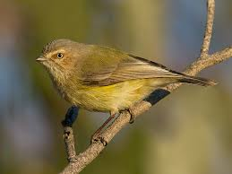
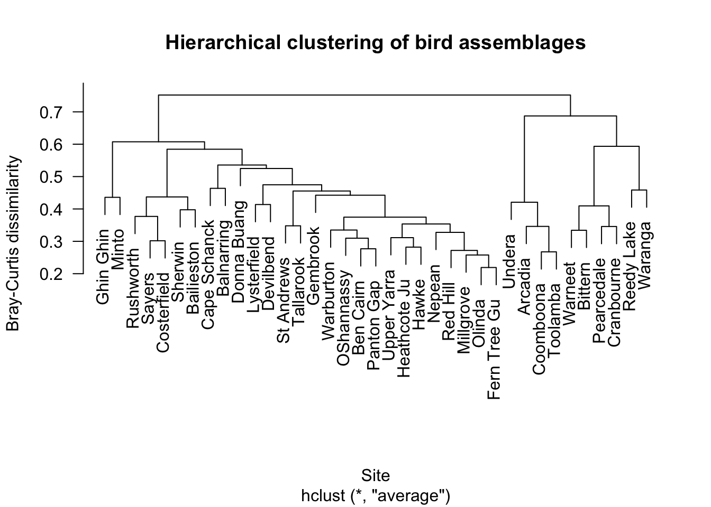
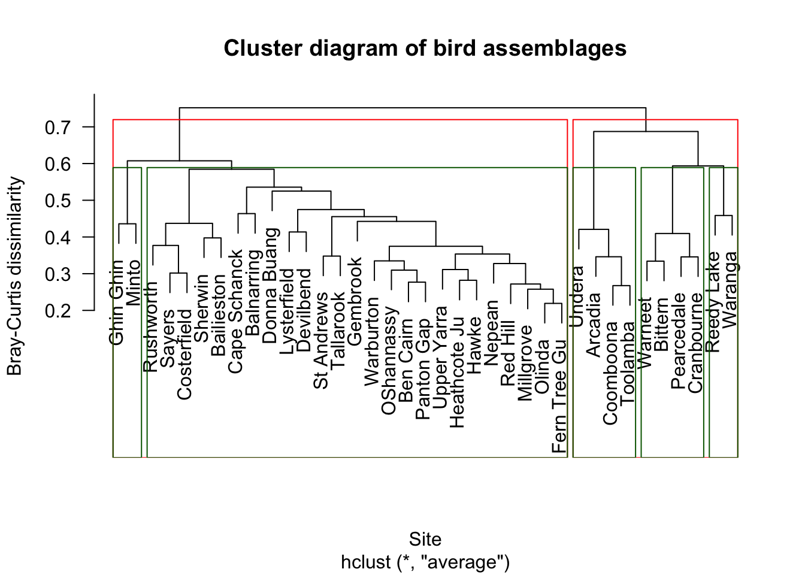
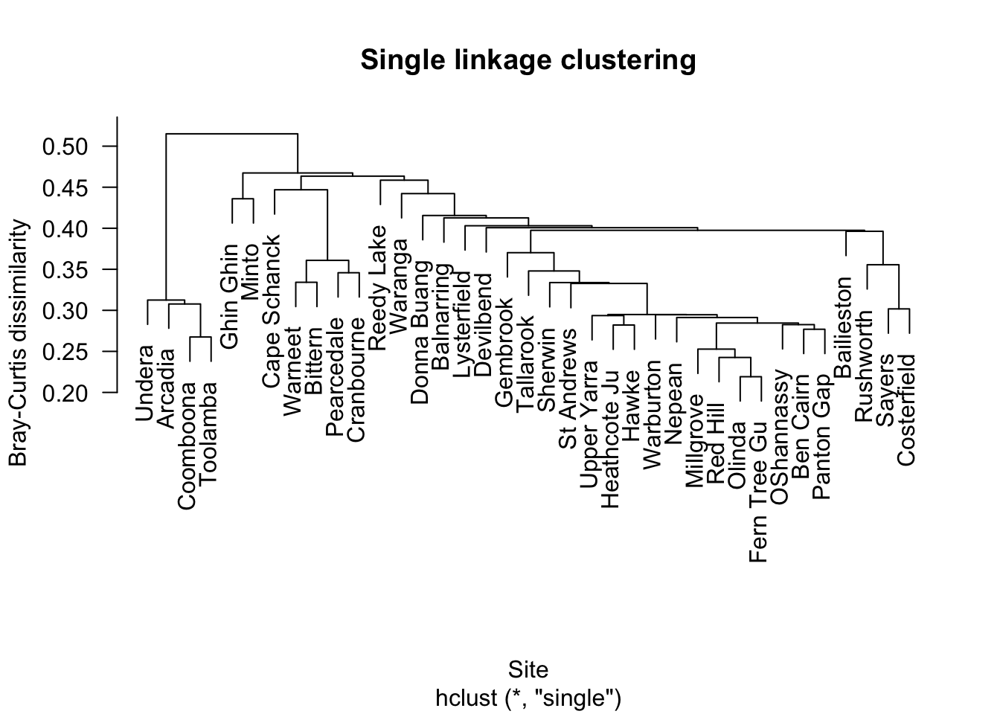
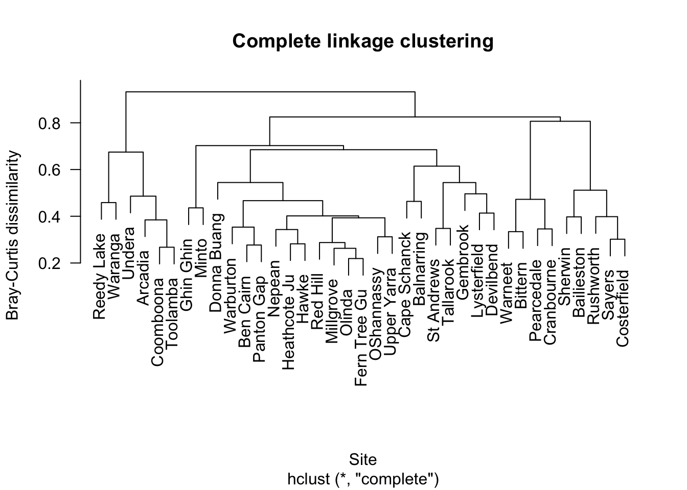
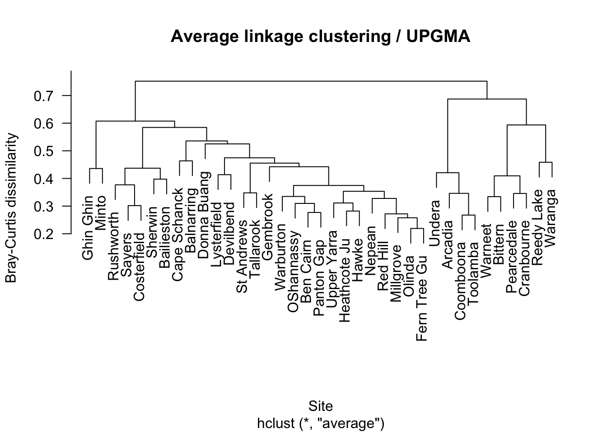

1 Dissimilarity Matrices and Hierarchical Clustering
In this tutorial we will use bird assemblage data from Mac Nally’s forest and woodland bird study.
Mac Nally (1989) examined forest and woodland birds along a broad environmental gradient in south-eastern Australia. The paper focused on habitat breadth, habitat position and abundance, but the same dataset is also useful for exploring whether sites with similar bird assemblages cluster together.

Here, each row is a site, and each bird species column contains an abundance or density estimate for that species at that site.
We will use hierarchical clustering to ask:
Which sites have similar bird communities?
1.1 Load packages
We need the vegan package because it contains the vegdist() function for ecological dissimilarity matrices.
1.2 Load the data
The file macnally.csv contains the bird assemblage data.
If your file is in the same folder as this Quarto document use this :
1.3 Examine the structure of the data
'data.frame': 37 obs. of 103 variables:
$ HABITAT : chr "Mixed" "Gippsland Ma" "Gippsland Ma" "Gippsland Ma" ...
$ V1GST : num 3.4 3.4 8.4 3 5.6 8.1 8.3 4.6 3.2 4.6 ...
$ V2EYR : num 0 9.2 3.8 5 5.6 4.1 7.1 5.3 5.2 1.2 ...
$ V3GF : num 0 0 0.7 0 12.9 10.9 6.9 11.1 8.3 4.6 ...
$ V4BTH : num 0 0 2.8 5 12.2 24.5 29.1 28.2 18.2 6.5 ...
$ V5GWH : num 0 0 0 2 9.5 5.6 4.2 3.9 3.8 2.3 ...
$ V6WTTR : num 0 0 0 0 2.1 6.7 2 6.5 4.2 5.2 ...
$ V7WEHE : num 0 0 10.7 3 7.9 9.4 7.1 2.6 2.8 0.6 ...
$ V8WNHE : num 11.9 11.5 12.3 10 28.6 6.7 27.4 10.9 9 3.6 ...
$ V9SFW : num 0.4 8.3 4.9 6.9 9.2 0 13.1 3.1 3.8 3.8 ...
$ V10WBSW : num 0 12.6 10.7 12 5 8.9 2.8 8.6 5.6 3 ...
$ V11CR : num 1.1 0 0 0 19.1 12.1 0 9.3 14.1 7.5 ...
$ V12LK : num 3.8 0.5 1.9 2 3.6 6.7 2.8 3.8 3.2 2.4 ...
$ V13RWB : num 9.7 11.6 16.6 11 5.7 2.7 2.4 0.6 0 0.6 ...
$ V14AUR : num 0 0 2.3 1.5 8.8 0 2.8 1.3 0 0 ...
$ V15STTH : num 0 0 2.8 0 7 16.8 13.9 10.2 12.2 11.3 ...
$ V16LR : num 4.8 3.7 5.5 11 1.6 3.4 0 0 0.6 5.8 ...
$ V17WPHE : num 27.3 27.6 27.5 20 0 0 16.7 0 0 0 ...
$ V18YTH : num 0 0 0 0 0 0 0 0 0 9.6 ...
$ V19ER : num 5.1 2.7 5.3 2.1 1.4 2.2 0 1.2 1.3 2.3 ...
$ V20PCU : num 0 0 0 0 0 0 0 0 2.8 2.9 ...
$ V21ESP : num 0 3.7 0 2 3.5 3.4 5.5 5.1 7.1 0.6 ...
$ V22SCR : num 0 0 0 0 0.7 0 0 0 0 3 ...
$ V23RBFT : num 0 1.1 0 5 0 0.7 0 0.7 1.9 0 ...
$ V24BFCS : num 0.6 1.1 1.5 1.4 2.7 2 3.6 0 0.6 1.2 ...
$ V25WAG : num 1.9 3.4 2.1 3.4 0 0 0 0 0 0 ...
$ V26WWCH : num 0 0 0 0 0 0 0 0 0 9.8 ...
$ V27NHHE : num 0 6.9 3 32 6.4 2.2 5.6 0 0 0 ...
$ V28VS : num 0 0 0 0 0 5.4 5.6 1.9 4.2 5.1 ...
$ V29CST : num 1.7 0.9 1.5 1.4 0 0 4.6 0 0 0 ...
$ V30BTR : num 12.5 0 0 0 0 0 0 0 0 0 ...
$ V31AMAG : num 8.6 0 0 0 0 0 0 0 0 0 ...
$ V32SCC : num 12.5 0 0 0 0 0 0 0 0 0 ...
$ V33RWH : num 0.6 2.3 1.4 0 7 6.8 7.3 9.1 4.5 6.3 ...
$ V34WSW : num 0 5.7 24.3 10 0 0 3.6 0 0 0 ...
$ V35STP : num 4.8 0 3.1 4 0 0 2.4 0 0 3.5 ...
$ V36YFHE : num 0 1.1 11.7 0 6.1 0 0 0 0 2.3 ...
$ V37WHIP : num 0 0 0 0 0 0 0 2 3.2 0 ...
$ V38GAL : num 4.8 0 0 2.8 0 0 0 0 0 0 ...
$ V39FHE : num 26.2 0 0 0 0 0 0 0 0 0 ...
$ V40BRTH : num 0 0 0 0 0 0 0 0 0 6 ...
$ V41SPP : num 0 1.1 4.6 0.8 5.4 3.4 0 2 2.6 4.2 ...
$ V42SIL : num 0 0 0 0 0 2.7 1.2 0 4.9 1.2 ...
$ V43GCU : num 0 0 0 0 0 1.4 0 2.6 1.3 0 ...
$ V44MUSK : num 13.1 0 0 0 0 0 0 0 0 0 ...
$ V45MGLK : num 1.7 0 0 1.4 0 0 0 0 0 0 ...
$ V46BHHE : num 1.1 0 0 0 0 0 0 0 0 0 ...
$ V47RFC : num 0 0 0 0 0 0 0 0 0 0 ...
$ V48YTBC : num 0 0 0 0 0 0 0 1.9 2.6 0 ...
$ V49LYRE : num 0 0 0 0 0 0 0 0 0.6 0 ...
$ V50CHE : num 0 0 0 0 0 0 0 0 0.6 0 ...
$ V51OWH : num 0 0 0 0 0 0 0 0 0 0 ...
$ V52TRM : num 15 0 0 0 0 0 0 0 0 0 ...
$ V53MB : num 0 0 0 1 0 0 3.6 0 0 1.2 ...
$ V54STHR : num 0 0 0 0 0 0 0 0 0 0 ...
$ V55LHE : num 0 0 0 0 0 0 0 0 0 0 ...
$ V56FTC : num 0 2.3 0 0 2.1 0 0 2.6 2.6 1.7 ...
$ V57PINK : num 0 0 0 0 0 0 0 0 0 0 ...
$ V58OBO : num 0 0 0 0 1.4 0 0 0 0 1.2 ...
$ V59YR : num 0 0 0 0 0 0 0 0 0 0 ...
$ V60LFB : num 2.9 0 0 0 0 0 0 0 0 0 ...
$ V61SPW : num 0 0 0 0 0 0 0 0 0 0 ...
$ V62RBTR : num 0 0 0 0 0 0 0 0 0 0.6 ...
$ V63DWS : num 0.4 0 3.5 5.5 0 0 1.8 0 0 0 ...
$ V64BELL : num 0 0 0 0 22.1 0 0 0 0 0 ...
$ V65LWB : num 0 0 0 4 0 0 0 0 0 0 ...
$ V66CBW : num 0 0 0 0 0 0 0 0 0 0.6 ...
$ V67GGC : num 0 0 0 0 0 0 0 0 1.3 0 ...
$ V68PIL : num 0 0 0 0 0 0 0 0 1.3 0 ...
$ V69SKF : num 1.9 0 0 0 0 0 0 0 0 2.3 ...
$ V70RSL : num 6.7 0 0 0.8 0 0 0 0 0 0 ...
$ V71PDOV : num 0 0 0 0 0 0 0 0 0 0 ...
$ V72CRP : num 0 0 0 0 0 0 0 0 0 0 ...
$ V73JW : num 0 0 0 0 0 0 0 0 0 0 ...
$ V74BCHE : num 0 0 0 0 0 0 0 0 0 0 ...
$ V75RCR : num 0 0 0 0 0 0 0 0 0 0 ...
$ V76GBB : num 0 0 0 0 0.7 0 0 0 0.6 0 ...
$ V77RRP : num 4.8 0 0 0 0 0 0 0 0 0 ...
$ V78LLOR : num 0 0 0 0 0 0 0 0 0 0 ...
$ V79YTHE : num 0 0 0 0 0 0 0 0 0 0 ...
$ V80RF : num 0 0 0 0 0 1.4 0 1.9 3.2 0 ...
$ V81SHBC : num 0 0 1.4 0 0.7 0 0 2 1.3 0.6 ...
$ V82AZKF : num 0 0 0 0 0 0 0 0.7 0 0 ...
$ V83SFC : num 0 0 0 0 0 3.4 0 1.2 1.9 1.2 ...
$ V84YRTH : num 0 0 0 0 0 0 0 0 0 0 ...
$ V85ROSE : num 0 0 0 0 0 0 0 0.6 0 0 ...
$ V86BCOO : num 0 0 0 0 0 0 0 0 0.6 0 ...
$ V87LFC : num 0 0 1.8 0 0 0 2.4 0 0 0 ...
$ V88WG : num 0 0 0 0 0 0 0 0 0 0 ...
$ V89PCOO : num 1.9 0 0 0 0 0 0 0 0 0 ...
$ V90WTG : num 0 0 0 0 0 0 0 0 0 0 ...
$ V91NMIN : num 0.2 0 5.8 3.1 0 0 0 0 0 0 ...
$ V92NFB : num 0 0 0 0 0 0 0 0 0 0 ...
$ V93DB : num 0 0 0 0 0 0 0 0 0 0 ...
$ V94RBEE : num 0 0 0 0 0 0 0 0 0 0 ...
$ V95HBC : num 0 0 0 0 0 0 0 0 0 0 ...
$ V96DF : num 0 0 0 0 0 0 0 0 0 0 ...
$ V97PCL : num 9.1 0 0 0 0 0 0 0 0 0 ...
$ V98FLAME: num 0 0 0 0 0 0 0 0 0 0 ...
[list output truncated]The first columns describe the site or habitat type. The remaining columns are bird species abundances.
1.4 Separate site information from species data
The HABITAT column describes the broad habitat category. The bird species data begin after the habitat column.
HABITAT
Reedy Lake Mixed
Pearcedale Gippsland Ma
Warneet Gippsland Ma
Cranbourne Gippsland Ma
Lysterfield Mixed
Red Hill Mixed V1GST V2EYR V3GF V4BTH V5GWH V6WTTR
Reedy Lake 3.4 0.0 0.0 0.0 0.0 0.0
Pearcedale 3.4 9.2 0.0 0.0 0.0 0.0
Warneet 8.4 3.8 0.7 2.8 0.0 0.0
Cranbourne 3.0 5.0 0.0 5.0 2.0 0.0
Lysterfield 5.6 5.6 12.9 12.2 9.5 2.1
Red Hill 8.1 4.1 10.9 24.5 5.6 6.7Check that the species data are numeric:
2 Bray-Curtis Dissimilarity
2.1 Calculate Bray-Curtis dissimilarity
Bray-Curtis dissimilarity is commonly used for ecological community data because it compares sites using species abundances.
Values range from:
- 0 = sites have identical assemblages
- 1 = sites share no species in common
Reedy Lake Pearcedale Warneet Cranbourne Lysterfield Red Hill
Pearcedale 0.6064757
Warneet 0.6192469 0.3608724
Cranbourne 0.6493576 0.3458135 0.3881690
Lysterfield 0.8504073 0.6274208 0.6067270 0.6679905
Red Hill 0.8646783 0.6974849 0.6395924 0.7012250 0.4194429
Devilbend 0.7803703 0.5554849 0.5432526 0.5666394 0.4136546 0.4006753
Olinda 0.8728324 0.6716754 0.6963958 0.6993095 0.4338760 0.2425920
Fern Tree Gu 0.8842927 0.6968785 0.7297463 0.7147345 0.4499714 0.2855280
Sherwin 0.8476881 0.7610514 0.7041306 0.7377265 0.5725373 0.4657534
Heathcote Ju 0.8974209 0.7467483 0.6844389 0.7278521 0.5267883 0.3536222
Warburton 0.8153215 0.6633222 0.6380952 0.6420233 0.4095324 0.4015512
Millgrove 0.8219493 0.6747027 0.6293312 0.6742779 0.4030380 0.2875000
Ben Cairn 0.9311377 0.7501558 0.7619048 0.7675415 0.4907385 0.3561757
Panton Gap 0.9123711 0.7683323 0.7341635 0.7415419 0.5327723 0.3789745
OShannassy 0.9066493 0.7286796 0.6514113 0.7006459 0.5036120 0.3789901
Ghin Ghin 0.7792014 0.7436293 0.6975762 0.7337265 0.6096528 0.6017699
Minto 0.7689873 0.7439673 0.6728462 0.7266347 0.4920580 0.5161351
Hawke 0.8759055 0.6424064 0.6380060 0.6511548 0.4881841 0.3862168
St Andrews 0.8248432 0.7740822 0.7041327 0.7450822 0.4629906 0.3982202
Nepean 0.8774592 0.6449275 0.6055753 0.6705238 0.4548486 0.2912591
Cape Schanck 0.8097156 0.5754331 0.6039081 0.4468775 0.5386148 0.5345982
Balnarring 0.8849534 0.6780521 0.6940319 0.6294168 0.5442571 0.4557338
Bittern 0.7009615 0.4164188 0.3341721 0.4724653 0.5248750 0.6027579
Bailieston 0.8789157 0.8065028 0.7153797 0.7820092 0.5769116 0.5175708
Donna Buang 0.9324841 0.8249360 0.7481381 0.7836706 0.5963533 0.4998182
Upper Yarra 0.8625863 0.7412229 0.6847792 0.6992481 0.4605809 0.3933424
Gembrook 0.8512503 0.6490595 0.6087247 0.6867196 0.4669492 0.4233100
Arcadia 0.5150546 0.6724196 0.6770395 0.6935901 0.8977333 0.8852556
Undera 0.6664769 0.7503682 0.7536058 0.7271605 0.8289733 0.7920000
Coomboona 0.5987567 0.7854798 0.7184611 0.7378254 0.8642458 0.8349206
Toolamba 0.5382810 0.7081578 0.6773193 0.6555024 0.8985507 0.9092715
Rushworth 0.7271251 0.7596685 0.6550741 0.7736842 0.7194110 0.7228442
Sayers 0.7972973 0.7429010 0.6656308 0.7265176 0.5889695 0.6132670
Waranga 0.4585441 0.5790878 0.4946113 0.5544114 0.7367044 0.8186628
Costerfield 0.7079971 0.7520510 0.6940815 0.7289646 0.5651332 0.5508108
Tallarook 0.8204724 0.7350598 0.6655629 0.7013575 0.5102571 0.4989769
Devilbend Olinda Fern Tree Gu Sherwin Heathcote Ju Warburton
Pearcedale
Warneet
Cranbourne
Lysterfield
Red Hill
Devilbend
Olinda 0.4134984
Fern Tree Gu 0.4766962 0.2191262
Sherwin 0.6033313 0.4860457 0.4477504
Heathcote Ju 0.5007474 0.2948987 0.3417279 0.3338252
Warburton 0.4322760 0.3420229 0.3545526 0.5663501 0.4297782
Millgrove 0.4336283 0.2527538 0.2628129 0.4519950 0.3440048 0.3087515
Ben Cairn 0.5595027 0.3204164 0.2845152 0.5827034 0.3953079 0.3535584
Panton Gap 0.5174403 0.3213213 0.3285242 0.5570934 0.3577087 0.2946429
OShannassy 0.5095541 0.3168950 0.3369896 0.5488194 0.3524869 0.3564474
Ghin Ghin 0.6204506 0.6060973 0.5825666 0.5971873 0.5926561 0.6212690
Minto 0.4673546 0.5371740 0.5696203 0.6895929 0.5626719 0.4924142
Hawke 0.5231660 0.3600000 0.3729977 0.3831851 0.2821110 0.4626866
St Andrews 0.4732006 0.3973799 0.4644522 0.3684531 0.3327428 0.4698464
Nepean 0.4185047 0.3304521 0.3450915 0.4406720 0.3432432 0.4372140
Cape Schanck 0.6057348 0.5173824 0.5233918 0.6619804 0.5887407 0.5603587
Balnarring 0.4761388 0.4845554 0.4672080 0.5907007 0.5400697 0.4703462
Bittern 0.4634742 0.6365651 0.6201830 0.7380746 0.6490736 0.5515873
Bailieston 0.5800799 0.5530686 0.5880014 0.3974800 0.4930198 0.6287879
Donna Buang 0.6687276 0.4911197 0.4155392 0.6121361 0.5444532 0.4761092
Upper Yarra 0.5284752 0.3381243 0.3424460 0.4422492 0.2936015 0.4375843
Gembrook 0.4960971 0.4274643 0.4357731 0.5726496 0.4883607 0.4144411
Arcadia 0.7742811 0.9157040 0.8675000 0.7673657 0.8104596 0.8658271
Undera 0.7156948 0.8029690 0.8007430 0.5982936 0.7263374 0.7974293
Coomboona 0.7540323 0.8527936 0.8439384 0.6920366 0.7973478 0.8528736
Toolamba 0.7833633 0.9223505 0.9215686 0.8183161 0.8641053 0.9059445
Rushworth 0.7772264 0.7372774 0.7102833 0.5115269 0.6220930 0.6673219
Sayers 0.6973329 0.6306938 0.6050509 0.4228635 0.5210264 0.5603175
Waranga 0.7004464 0.8108581 0.8127191 0.7171087 0.7599392 0.6790575
Costerfield 0.6066634 0.5512857 0.5486425 0.3984652 0.4924091 0.5216125
Tallarook 0.5442159 0.4349693 0.4805035 0.4377613 0.4769614 0.4476828
Millgrove Ben Cairn Panton Gap OShannassy Ghin Ghin Minto
Pearcedale
Warneet
Cranbourne
Lysterfield
Red Hill
Devilbend
Olinda
Fern Tree Gu
Sherwin
Heathcote Ju
Warburton
Millgrove
Ben Cairn 0.3816227
Panton Gap 0.3855517 0.2769469
OShannassy 0.3444028 0.3368119 0.2825911
Ghin Ghin 0.5582715 0.6406751 0.6173951 0.5847382
Minto 0.5038482 0.5402744 0.5465995 0.5135135 0.4359377
Hawke 0.4007807 0.4667507 0.4292282 0.4006667 0.6044699 0.6138471
St Andrews 0.3769310 0.5013809 0.4355383 0.4902887 0.6200086 0.5528872
Nepean 0.3439398 0.3925759 0.3827305 0.3727461 0.5915859 0.5844156
Cape Schanck 0.4974174 0.5930496 0.5732501 0.5413375 0.6801550 0.6878429
Balnarring 0.4707170 0.5241140 0.5177931 0.5536313 0.5880759 0.6337199
Bittern 0.5501355 0.6488696 0.6377171 0.6105395 0.5832816 0.5474478
Bailieston 0.5563840 0.6859554 0.6163009 0.6216216 0.7049837 0.7226891
Donna Buang 0.5044423 0.4251115 0.4385382 0.4623946 0.6957776 0.7023661
Upper Yarra 0.3056931 0.4362053 0.3818295 0.3122229 0.5676485 0.5537817
Gembrook 0.3818261 0.4676074 0.4231699 0.4742451 0.6147235 0.5164386
Arcadia 0.8406353 0.8512397 0.8752415 0.8753494 0.6615454 0.7160744
Undera 0.7779080 0.8388383 0.8280142 0.8191075 0.6006687 0.7253467
Coomboona 0.8022106 0.8857789 0.8703432 0.8561237 0.5982906 0.6940771
Toolamba 0.8736397 0.9242736 0.9097286 0.9084725 0.6477217 0.7306861
Rushworth 0.6482048 0.8109426 0.7065095 0.7021881 0.7348294 0.7706627
Sayers 0.5700878 0.6919459 0.6096518 0.6141220 0.6590630 0.7217631
Waranga 0.7237967 0.8701870 0.7808467 0.7616651 0.7061303 0.6873896
Costerfield 0.5090271 0.6535356 0.6079818 0.5891671 0.6383872 0.6715797
Tallarook 0.3885144 0.5861345 0.5385870 0.5510316 0.6368503 0.6410350
Hawke St Andrews Nepean Cape Schanck Balnarring Bittern
Pearcedale
Warneet
Cranbourne
Lysterfield
Red Hill
Devilbend
Olinda
Fern Tree Gu
Sherwin
Heathcote Ju
Warburton
Millgrove
Ben Cairn
Panton Gap
OShannassy
Ghin Ghin
Minto
Hawke
St Andrews 0.4019048
Nepean 0.3250092 0.4384376
Cape Schanck 0.5188018 0.6144883 0.4728770
Balnarring 0.5020548 0.6064343 0.4126552 0.4636902
Bittern 0.6282707 0.6575574 0.5830636 0.5561484 0.5528809
Bailieston 0.5122736 0.4427921 0.4783821 0.7228145 0.6600326 0.6812680
Donna Buang 0.5062907 0.6192616 0.5238095 0.6848211 0.6693241 0.6990881
Upper Yarra 0.3290633 0.4195889 0.4015967 0.5533981 0.5282651 0.5963250
Gembrook 0.5176899 0.4873227 0.3702389 0.4872900 0.4995479 0.4972044
Arcadia 0.8581220 0.8015021 0.8727658 0.9031216 0.8250429 0.6776838
Undera 0.7334826 0.7128117 0.7387329 0.8740293 0.8073029 0.7920306
Coomboona 0.8269231 0.7660785 0.8082281 0.8852085 0.8404385 0.8124153
Toolamba 0.8811189 0.8617021 0.8823132 0.9039146 0.8909321 0.7617308
Rushworth 0.6383351 0.5819024 0.6711906 0.6844408 0.7441117 0.6524454
Sayers 0.4573764 0.4613791 0.5392954 0.6804277 0.6760876 0.6696680
Waranga 0.7580819 0.7262273 0.7748474 0.6913525 0.7921715 0.5439642
Costerfield 0.5119852 0.4434055 0.4995876 0.6648569 0.6510172 0.6551073
Tallarook 0.4063866 0.3479524 0.4740917 0.6066790 0.5504923 0.6338384
Bailieston Donna Buang Upper Yarra Gembrook Arcadia Undera
Pearcedale
Warneet
Cranbourne
Lysterfield
Red Hill
Devilbend
Olinda
Fern Tree Gu
Sherwin
Heathcote Ju
Warburton
Millgrove
Ben Cairn
Panton Gap
OShannassy
Ghin Ghin
Minto
Hawke
St Andrews
Nepean
Cape Schanck
Balnarring
Bittern
Bailieston
Donna Buang 0.6938776
Upper Yarra 0.5406735 0.4819326
Gembrook 0.5788418 0.6313993 0.4852574
Arcadia 0.8367613 0.8640305 0.8322497 0.8923564
Undera 0.6692635 0.8449319 0.7603102 0.8135310 0.4860301
Coomboona 0.7507898 0.8546272 0.7945493 0.8650190 0.3845216 0.3125205
Toolamba 0.8661273 0.9251674 0.8726208 0.9156449 0.3077411 0.4637830
Rushworth 0.4846871 0.8059490 0.6778257 0.6053174 0.8359034 0.7135710
Sayers 0.4089904 0.6835043 0.5870920 0.5781979 0.8322212 0.6650619
Waranga 0.7054706 0.8874082 0.7565891 0.6848160 0.6130536 0.6573686
Costerfield 0.3962930 0.6626281 0.5293083 0.5338377 0.7870564 0.6370721
Tallarook 0.5121795 0.6394558 0.4471752 0.4963161 0.8609626 0.7549789
Coomboona Toolamba Rushworth Sayers Waranga Costerfield
Pearcedale
Warneet
Cranbourne
Lysterfield
Red Hill
Devilbend
Olinda
Fern Tree Gu
Sherwin
Heathcote Ju
Warburton
Millgrove
Ben Cairn
Panton Gap
OShannassy
Ghin Ghin
Minto
Hawke
St Andrews
Nepean
Cape Schanck
Balnarring
Bittern
Bailieston
Donna Buang
Upper Yarra
Gembrook
Arcadia
Undera
Coomboona
Toolamba 0.2675289
Rushworth 0.7728824 0.8609764
Sayers 0.7899761 0.8572958 0.3555699
Waranga 0.6746811 0.6315256 0.4422122 0.6249683
Costerfield 0.7307905 0.8239679 0.3983567 0.3017514 0.5793342
Tallarook 0.7831686 0.8734808 0.5792788 0.4818976 0.6899011 0.41218823 Hierarchical Clustering
3.1 Run hierarchical clustering
We will use UPGMA clustering, which is specified by method = "average" in hclust().
Call:
hclust(d = Braydistance, method = "average")
Cluster method : average
Distance : bray
Number of objects: 37 3.2 Plot the dendrogram
The dendrogram shows how sites are progressively joined into clusters.
Sites joined low on the dendrogram are more similar. Sites joined high on the dendrogram are more different.
3.3 Improved dendrogram with labels

3.4 Add cluster rectangles
We can draw rectangles around possible cluster solutions.

The rectangles show possible groupings:
- Red rectangles = 2 broad clusters
- Green rectangles = 5 finer clusters
There is no single correct number of clusters. The appropriate choice depends on the ecological question.
4 Extracting Cluster Membership
4.1 Cut the tree into clusters
Cut the tree into 5 clusters:
Reedy Lake Pearcedale Warneet Cranbourne Lysterfield Red Hill
1 2 2 2 3 3
Devilbend Olinda Fern Tree Gu Sherwin Heathcote Ju Warburton
3 3 3 3 3 3
Millgrove Ben Cairn Panton Gap OShannassy Ghin Ghin Minto
3 3 3 3 4 4
Hawke St Andrews Nepean Cape Schanck Balnarring Bittern
3 3 3 3 3 2
Bailieston Donna Buang Upper Yarra Gembrook Arcadia Undera
3 3 3 3 5 5
Coomboona Toolamba Rushworth Sayers Waranga Costerfield
5 5 3 3 1 3
Tallarook
3 Add the cluster identity back to the site information:
Site Habitat Cluster
Reedy Lake Reedy Lake Mixed 1
Pearcedale Pearcedale Gippsland Ma 2
Warneet Warneet Gippsland Ma 2
Cranbourne Cranbourne Gippsland Ma 2
Lysterfield Lysterfield Mixed 3
Red Hill Red Hill Mixed 3
Devilbend Devilbend Mixed 3
Olinda Olinda Mixed 3
Fern Tree Gu Fern Tree Gu Montane Fore 3
Sherwin Sherwin Foothills Wo 3
Heathcote Ju Heathcote Ju Montane Fore 3
Warburton Warburton Montane Fore 3
Millgrove Millgrove Mixed 3
Ben Cairn Ben Cairn Mixed 3
Panton Gap Panton Gap Montane Fore 3
OShannassy OShannassy Mixed 3
Ghin Ghin Ghin Ghin Mixed 4
Minto Minto Mixed 4
Hawke Hawke Mixed 3
St Andrews St Andrews Foothills Wo 3
Nepean Nepean Foothills Wo 3
Cape Schanck Cape Schanck Mixed 3
Balnarring Balnarring Mixed 3
Bittern Bittern Gippsland Ma 2
Bailieston Bailieston Box-Ironbark 3
Donna Buang Donna Buang Mixed 3
Upper Yarra Upper Yarra Mixed 3
Gembrook Gembrook Mixed 3
Arcadia Arcadia River Red Gu 5
Undera Undera River Red Gu 5
Coomboona Coomboona River Red Gu 5
Toolamba Toolamba River Red Gu 5
Rushworth Rushworth Box-Ironbark 3
Sayers Sayers Box-Ironbark 3
Waranga Waranga Mixed 1
Costerfield Costerfield Box-Ironbark 3
Tallarook Tallarook Foothills Wo 34.2 How many sites are in each cluster?
4.3 Do clusters correspond to habitat types?
1 2 3 4 5
Box-Ironbark 0 0 4 0 0
Foothills Wo 0 0 4 0 0
Gippsland Ma 0 4 0 0 0
Mixed 2 0 13 2 0
Montane Fore 0 0 4 0 0
River Red Gu 0 0 0 0 4This table helps us ask whether bird assemblage clusters correspond to habitat categories.
If sites from the same habitat type mostly fall into the same cluster, then bird communities are strongly structured by habitat.
If habitat types are spread across several clusters, then bird assemblages may be influenced by other factors as well.
5 Optional: Compare Clustering Methods
5.1 Single linkage

Single linkage can produce chaining, where sites are joined one at a time into long strings.
5.2 Complete linkage

Complete linkage tends to produce more compact clusters.
5.3 Average linkage

Average linkage is often a useful compromise and is commonly used in ecological community analysis.
6 Student Questions
6.1 Question 1
What does Bray-Curtis dissimilarity measure in this analysis?
Answer guide
It measures how different two sites are in their bird assemblages, based on species abundances.
A value near 0 means sites are very similar. A value near 1 means sites are very different.
6.2 Question 2
What does it mean when two sites join low on the dendrogram?
Answer guide
They have similar bird assemblages.
The lower the joining point, the smaller the dissimilarity between the sites.
6.3 Question 3
Why might we compare 2-cluster and 5-cluster solutions?
Answer guide
A 2-cluster solution shows very broad differences among sites.
A 5-cluster solution shows finer ecological structure.
The best level depends on whether we want a broad or detailed interpretation.
6.4 Question 4
Why might clusters not perfectly match habitat categories?
Answer guide
Bird assemblages may respond to more than broad habitat type.
They may also be influenced by vegetation structure, geographic location, resource availability, disturbance, or species interactions.
7 Key Take-home Message
Hierarchical clustering groups sites according to similarity in bird assemblages.
For the Mac Nally bird data, this lets us explore whether woodland and forest sites form distinct community types.
The method does not tell us the “true” number of ecological groups. Instead, it gives a visual and quantitative way to explore patterns in community composition.